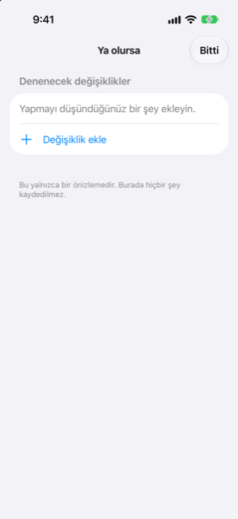

Kılavuz › Planlama
Ya olursa
Bir alışverişi, bir krediyi ya da gecikmiş bir ödemeyi yapmadan önce deneyin.
Ya olursa, bir değişikliği yapmadan önce denediğiniz yerdir: bir tarihte bir tutar harcamak, bir tutar almak, bir ödemeyi hariç tutmak ya da bir taksit planına girmek. Damla tahmininizi değişiklik varken ve yokken karşılaştırır; böylece değişikliğin en düşük noktanıza ve harcanabilir tutarınıza ne yapacağını, taahhüt etmeden önce görebilirsiniz.

Ne zaman kullanılır
- Büyük tek seferlik bir alışveriş düşünüyorsunuz ve bunun çevresindeki haftalara etkisini bilmek istiyorsunuz.
- Bir taksit planı düşünüyorsunuz ve kabul etmeden önce aylık ödemenin tahmininizde nasıl göründüğünü görmek istiyorsunuz.
- Bir gelir geç gelebilir ya da bir faturayı atlayabilirsiniz ve bunun size neye mal olduğunu görmek istiyorsunuz.
- Paranızın henüz defterlerinizde olmayan bir tarihte gelmesi bekleniyor ve sayılmasını istiyorsunuz.
Adım adım
- Today'deki Önünüzdeki bakiyeniz grafiğinden Tahmin'i açın ve sağ üstteki Ya olursa'na dokunun.
- Değişiklik ekle'ye dokunun.
- Üstteki türü seçin: Harca, Al, Atla veya Taksitler.
- Harca ya da Al için: Ne altına adını yazın, Tutar'ı girin, Tarih'i seçin ve Ödeme kaynağı hesabı ya da gideceği Nereye hesabını seçin.
- Atla için: Hariç tut altında hangi yinelenen ödemenin ya da planın hariç tutulacağını seçin — bir gelir veya fatura, bir taksit planı ya da aşamalı bir alışveriş.
- Taksitler için: Aylık taksit'i girin, ay sayısını (2 ile 60 arası) seçin, İlk taksit tarihini belirleyin ve Ödeme kaynağı hesabı seçin.
- Ekle'ye dokunun. Değişiklik Denenecek değişiklikler altındaki listeye katılır.
- Üstündeki Sonuç'u okuyun: En düşük nokta ve Harcanabilir tutar, her biri eski haliyle gösterilir ve değişikliklerinizle neye dönüşeceğine bir okla işaret edilir.
- Uyarı satırını kontrol edin: değişiklikler bakiyenizi asgari değerin altına düşürürse, kırmızı bir uyarı ne kadar ve hangi tarihte olduğunu söyler. Düşürmezse, yeşil bir satır bakiyenin önümüzdeki bir yıl boyunca asgari değerin üzerinde kaldığını söyler.
- Başka bir kombinasyon denemek için bir değişikliği kaydırarak kaldırın. İşiniz bitince Bitti'ye dokunun.
İşlenmiş bir örnek
Uydurma bir hane, 9 Kasım. Para birimi AED, asgari bakiye AED 1.000, en az 30 güne bakılıyor. Bir banka hesabı ve bir maaş:
| Ne sayılır | Değer |
|---|---|
| Günlük hesap (banka) | bugün AED 29,600 |
| İnternet, her ay 12'sinde | AED 350 çıkış |
| Kira, her ay 16'sında | AED 8,000 çıkış |
| Maaş, her ay 27'sinde | AED 25,000 giriş |
Değişiklik yokken Damla, Pzt 16 Kas'da AED 21,250'lik bir en düşük nokta ve AED 20,250'lik bir harcanabilir tutar gösterir. Ya olursa'nın yanıtladığı soru şudur: belirli bir tarihte tek ödeme olarak en fazla ne kadar ödeyebilirsiniz ve yine de AED 1.000 asgari bakiyeyi korursunuz?
| Ödeme tarihi | En fazla ödeyebileceğiniz | Rahat tutar |
|---|---|---|
| 10 Kas, 13 Kas veya 19 Kas | AED 20,000 | AED 16,000 |
| 29 Kas (maaş sonrası) | AED 36,500 | AED 29,500 |
Nasıl okunur: aynı ödemenin maaş gününden önce daha düşük, 27 Kasım maaşı hesaba girdikten sonra daha yüksek bir sınırı vardır. Önemli olan, ödemeyi izleyen haftaların ulaştığı en düşük noktadır, bugünkü bakiye değil. Bu hanedeki AED 40,000'lik birikim bu rakamların hiçbirinde yoktur, çünkü o hesap tahmine dahil değil olarak işaretlenmiştir.
Bilmenizde fayda var
İlgili
Anlaşılmayan ya da eksik bir şey mi var? support@raveniq.ai adresine yazın ve hangi sayfa olduğunu belirtin.